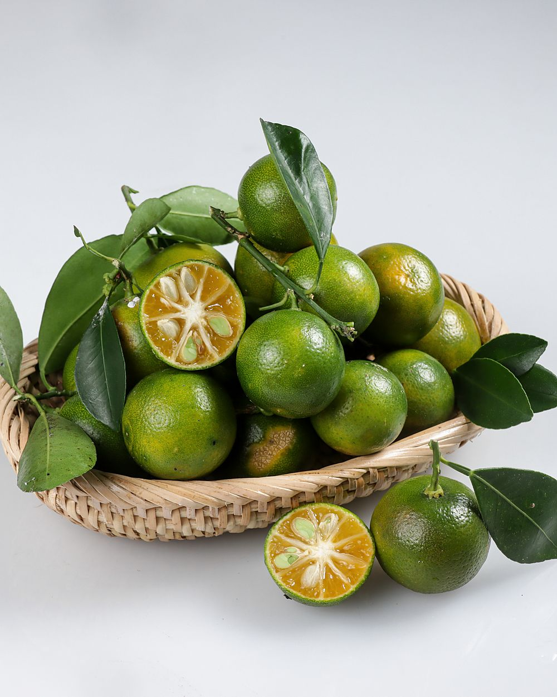
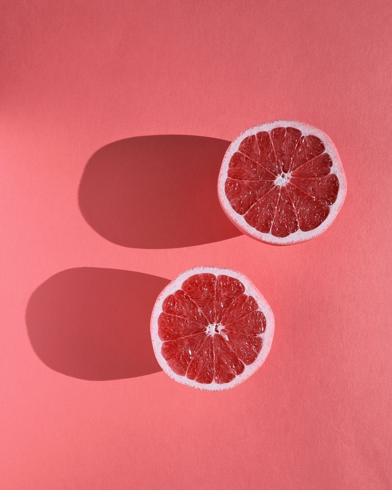
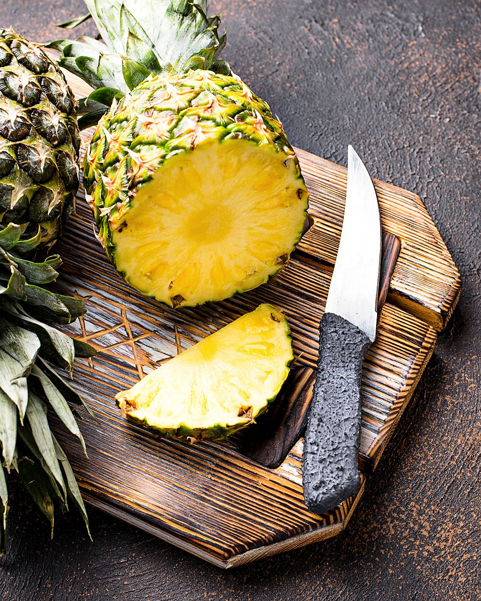
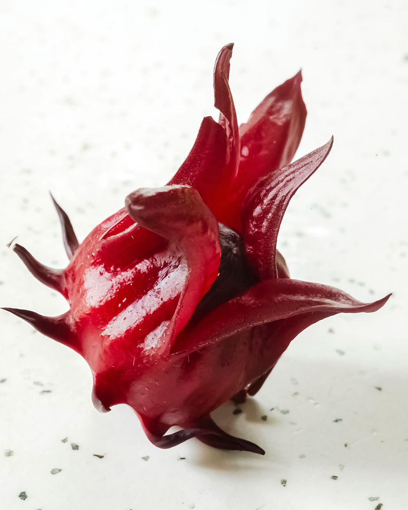
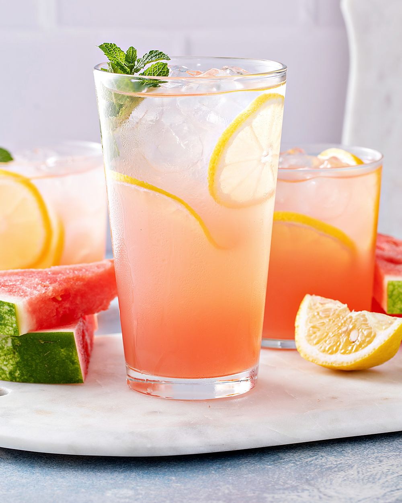

Five sodas. One pinch.
Four all year, one that comes and goes with the fruit. Every bottle gets the same 150 mg of sea salt; the sugar is whatever the fruit needs and not more, which works out at 7–9 g a bottle. The dots are how each one tastes: salty, sour, sweet, out of five.
Calamansi & Sour Plum
The original, and the reason the company exists. Calamansi pressed the same morning, one sour plum steeped in every bottle, and the salt that comes with it. Sharp first, then rounder than you expect. If you grew up with lime juice from a drinks stall, you already know it.
- 8.5 g sugar a bottle3.4 g per 100 ml
- Calamansi juice 20%plus one sour plum, sea salt, cane sugar, carbonated water
- Goes withchicken rice, anything fried
- All yearat the door and all eight stockists


Pink Grapefruit & Sea Salt
Grapefruit is bitter, and salt is the one thing that argues with bitterness properly. So this one is dry, pink, and finishes clean instead of finishing sweet. It is the one the bartenders buy. It is also very good at four in the afternoon when the heat has got into the walls.
- 8 g sugar a bottle3.2 g per 100 ml
- Pink grapefruit juice 22%sea salt, cane sugar, carbonated water
- Goes withgrilled fish, a very hot afternoon, gin
- All yearat the door and six of the eight stockists
Pineapple & Sea Salt
Pineapple with salt is an old trick: the fruit sellers do it because it stops the tingle and brings out the sweetness you were promised. We press ripe Josapine pineapples and add nothing you would not add yourself. It is the sweetest of the five, which still makes it a third of a cola.
- 9 g sugar a bottle3.6 g per 100 ml
- Pineapple juice 24%sea salt, cane sugar, carbonated water
- Goes withnasi lemak, satay, the beach
- All yearat the door and five of the eight stockists


Roselle & Sea Salt
Roselle is the red hibiscus calyx you find at the wet market and in every Malay kampung garden. Steeped, it tastes like cranberry that has been somewhere warmer. We keep the sugar lowest here because roselle carries its own tannin, and the salt makes it read as savoury rather than sour. The colour is not added. That is just what it looks like.
- 7.5 g sugar a bottle3 g per 100 ml
- Roselle infusion12 g of dried calyx to the litre, sea salt, cane sugar, carbonated water
- Goes withrendang, mutton, a good gin
- All yearat the door and five of the eight stockists
Watermelon & Sea Salt
The first one we made just for the hot months, which in Singapore is a joke, so it runs while the good watermelons do. Thirty percent juice, barely any added sugar, and the salt does what it does on a slice of watermelon at the beach. When it is gone, it is gone until the next lot.
- 7 g sugar a bottle2.8 g per 100 ml
- Watermelon juice 30%sea salt, cane sugar, carbonated water
- Goes witha barbecue pit, East Coast on a Sunday
- Until Decemberat the door, Ninefold Grocer and Common Ground

Build your six.
Any mix. S$27 for six, delivered anywhere on the island for S$6, free once an order passes S$60. Or collect on Saturday and skip the delivery. Pick your six and the button writes the WhatsApp message for you.
- Calamansi & Sour Plum the original
- Pink Grapefruit & Sea Salt bitter finish
- Pineapple & Sea Salt sweetest of the five
- Roselle & Sea Salt the dry one
- Watermelon & Sea Salt seasonal, until December
0of six bottles
S$0 pick six bottles, any mix
Order over WhatsAppTwelve bottles are S$50; cafés and shops, message us about cases of 24.